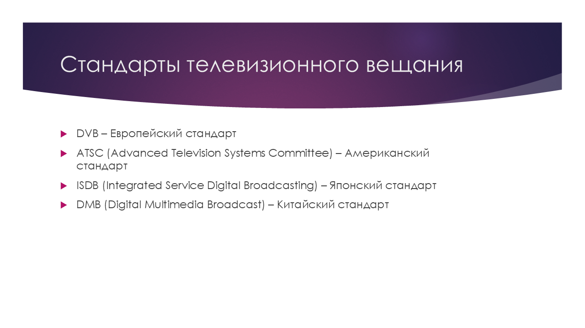

Спутниковое и DVB-T2 телевидение. Стандарты телевизионного вещания. Программные средства
Гаврилов Никита
ИУ3-31М
© Gavrilov Nikita
Содержание
- Виды телевизионного вещания
- Спутниковое телевидение
- DVB-T2 телевидение
- Коаксиальный кабель
- Стандарты телевизионного вещания
- Программные средства для приёма и обработки сигнала
- Будущее телевизионного вещания
Виды телевизионного вещания
- Аналоговое телевидение
- Цифровое телевидение
- Кабельное и интернет-телевидение
Спутниковое телевидение
Основные шаги передачи:
- Передача сигнала на спутник
- Передача от спутника на Землю
- Приём сигнала пользователем
Оборудование для спутникового
телевидения
Спутниковая антенна

Конвертер (LNB)
Ресивер
LNB (Low-noise block downconverter, малошумящий усилитель и понижающий преобразователь частоты)
DVB-T2 телевидение
DVB-T2 (Digital Video Broadcasting — Second Generation Terrestrial, цифровое наземное телерадиовещание второго поколения)
DVB-T2 как замена стандарту DVB-T
Оборудование
для DVB-T2
телевидения
Сравнение спутникового и DVB-T2
телевидения
Коаксиальный
кабель
кабель,
которому всё
равно, что вы
смотрите!
Стандарты телевизионного вещания

Стандарты телевизионного вещания.
Карта
Программные средства для приема
и обработки сигнала
Будущее телевизионного вещания